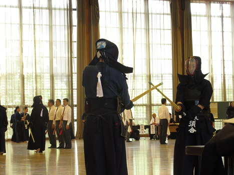
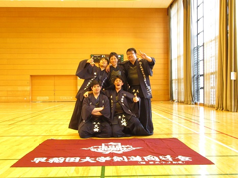

|
5月15日に行われた新宿区民大会の様子を掲載します。当日は新宿区剣道連盟とともに大会の運営にあたった 為に、写真が撮れず写真置き場と化していますがご了承ください。また予定を繰り合わせてお手伝いをしてくれた 後輩のみんな、ありがとうございました。 おはよう。広報が会場に着いた時にはもうこんなに後輩が！えらい！ 
二女・松浦（右）と三女・児玉（左）のじゃれあい。あれ、奥に誰か写ってる・・・ やっぱり主将だった（お疲れ気味のご様子） あれ？今日は私服で良いんだよ？沼（５４）どうしたの？ 二女コンビも微妙な表情で登場。広報が悪いのかな・・・・？ 早稲女こと第三副将（左）、サンドイッチをムシャムシャ。 広報の天敵・上本（右）も登場。何かもの言いたげ。 試合前に組み合わせをチェック。こちらは５０期幹事長・竹内先輩。 おはようございますっ！ いよいよ試合。青木（５４）の笑顔も沼の残像で台無しに。  仕事できなくてすいません。剣道の写真がありません。 これも河野（５４）が撮ってくれました…ハーイ、オッケー。 男子個人 女子団体B 女子団体A 男子団体B  男子団体A 最後に集合写真と記念写真です。 以上で新宿区民大会は終了です。日曜も早明戦頑張りましょう。 (※写真へのコメントは全て管理人がしております。) |